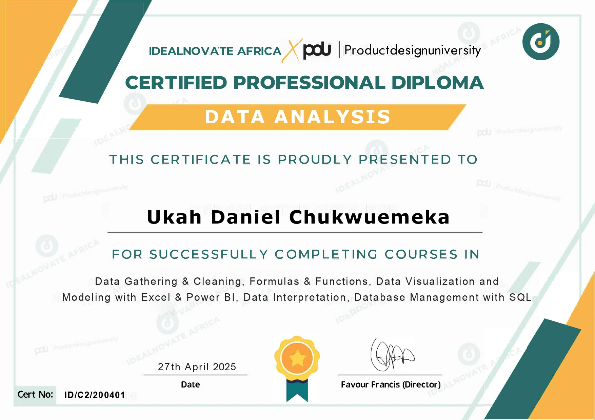
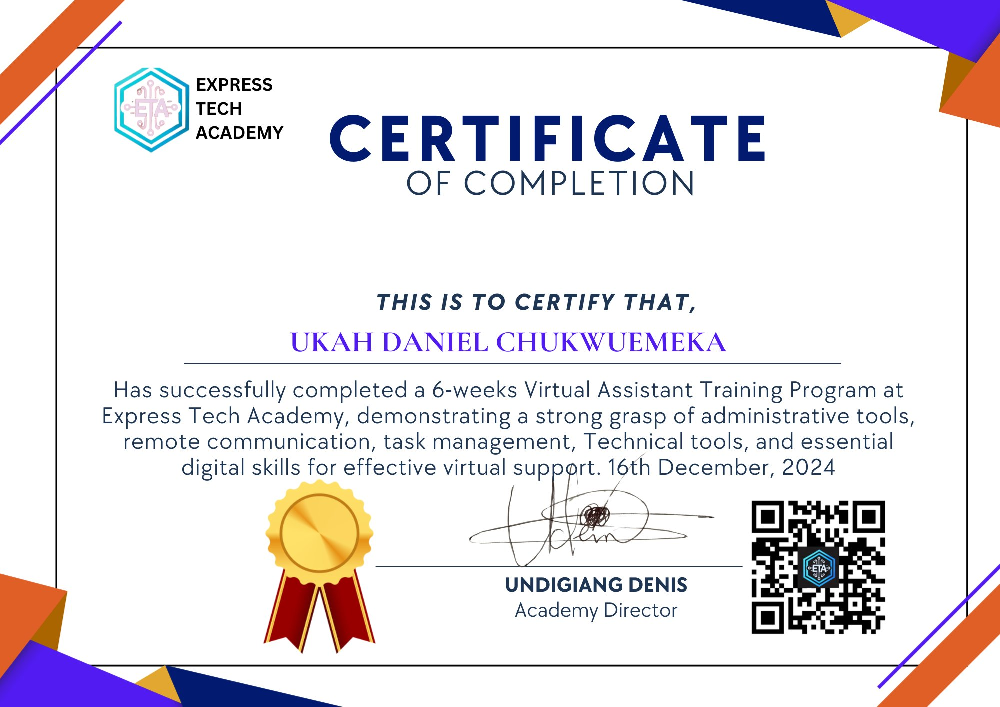
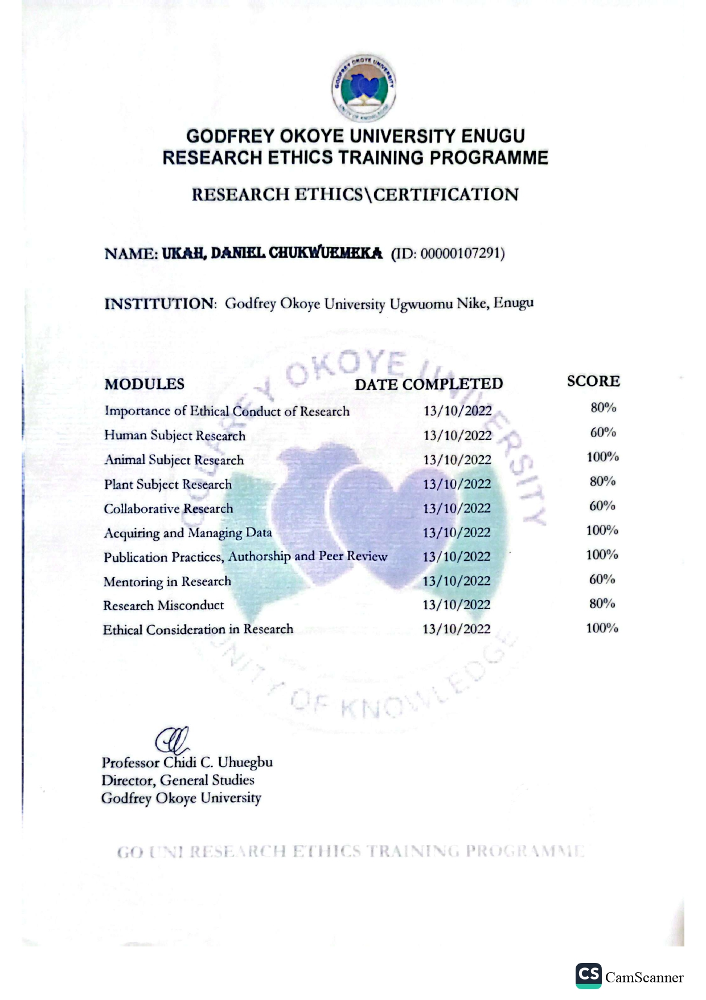
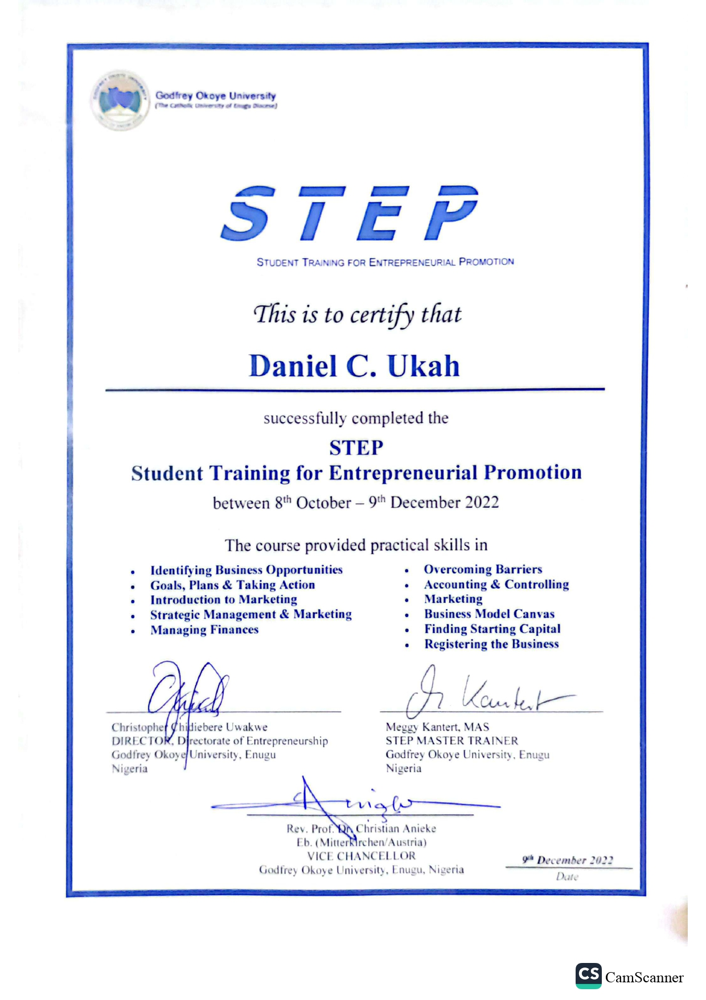
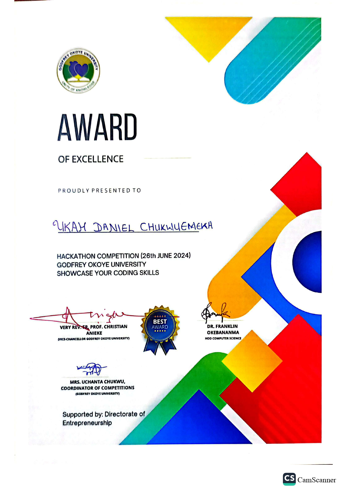
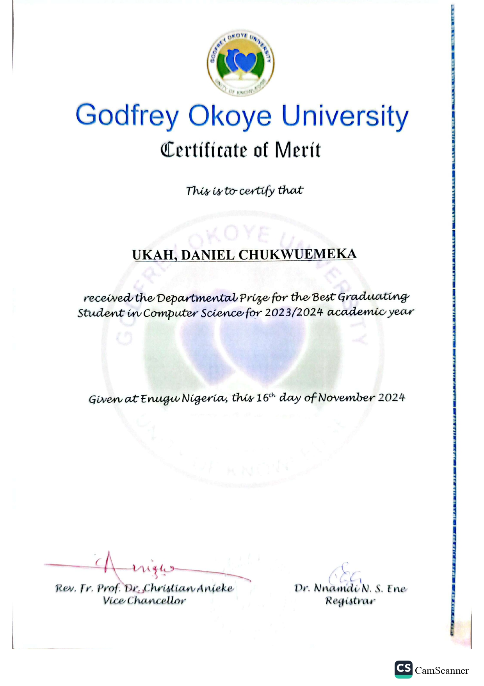
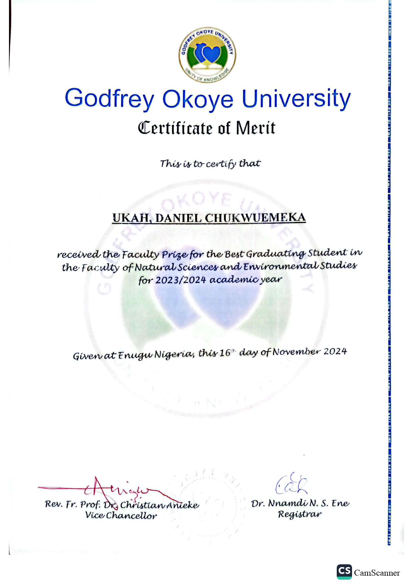
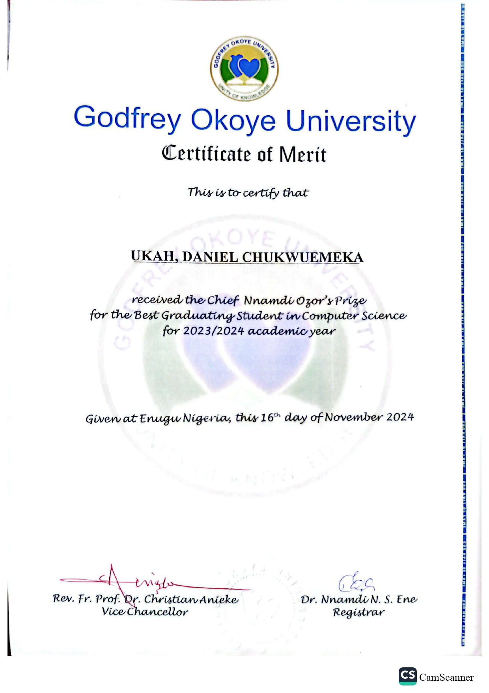

Computer Science Instructor · Frontend Developer · Data Analyst
First Class graduate & Best Graduating Student from Godfrey Okoye University. Passionate about equipping the next generation with technology skills that matter.
Class Honours
Best Grad Student
Years Teaching
Students Mentored
I am a First Class Computer Science graduate from Godfrey Okoye University, Enugu — awarded the Best Graduating Student prize for both my department and faculty in the 2023/2024 academic year.
My journey in technology extends beyond the classroom and into the real world of education. Having served as an IT Instructor at Isabella's Christ Envoys Academy, I taught Computer Science, guided students through programming fundamentals, prepared them for CBT exams, and managed a full computer laboratory. At Fhilsystems Academy, I mentored over 20 students as a Programmer and IT Instructor.
Beyond teaching, I am an active Frontend Developer and Data Analyst, building responsive web applications and deriving insights from data using Excel, Power BI, and SQL. I served as the pioneer Vice President of NACOS at Godfrey Okoye University, led a student portal redesign project, and represented my department in the 2024 university hackathon.
I believe technology education transforms lives. My goal is to bring that transformation to secondary school students — making Computer Science engaging, practical, and career-relevant.
Taught CS, programming, and CBT skills to secondary school students.
Frontend specialist in HTML, CSS, JavaScript, React, and UI/UX Design.
Certified in Excel, Power BI, SQL, Data Visualization & Interpretation.
Best Graduating Student — Department & Faculty, Class President, NACOS VP.
Led a team of student developers to redesign the Godfrey Okoye University Student Portal — improving UX for 3,000+ students and digitising administrative workflows.
Collaborated with student developers to build a fully functional online election system for the Godfrey Okoye University Students Council of Honor — enabling transparent digital voting.
Designed and developed an online digital prayer manual for Godfrey Okoye University students — a responsive web application for spiritual content delivery.
Developed a dedicated social media platform for Godfrey Okoye University students — enabling campus community interaction and content sharing.
Designed and developed multiple business websites for clients through Fhilsystems Academy — delivering responsive, professional digital presences.
Completed certified professional projects in data gathering, cleaning, visualisation with Power BI & Excel, and database management using SQL.
Data Gathering & Cleaning, Excel, Power BI, SQL, Data Interpretation & Visualisation
CRM tools, Executive Assistant tools, Activity Planning & Organisation
Distinctions in all nine (9) subjects.








Departmental Prize for Best Graduating Student in Computer Science, 2023/2024
Faculty Prize — Faculty of Natural Sciences & Environmental Studies, 2023/2024
Awarded the prestigious Chief Nnamdi Ozor Prize for Best Graduating CS Student
Elected Class President of the Computer Science 2024 graduating set
Served as the pioneer VP of the Nigerian Association of CS Students, GOUNI branch
Represented Computer Science Department in the 2024 GOUNI Hackathon; received Award of Excellence
Served as Project Manager on the redesign of the GOUNI Student Portal — 3,000+ student records
Graduated with a First Class degree — top of class in the Computer Science department
I am open to teaching positions in top secondary schools and am available immediately. Feel free to reach out via any of the channels below.